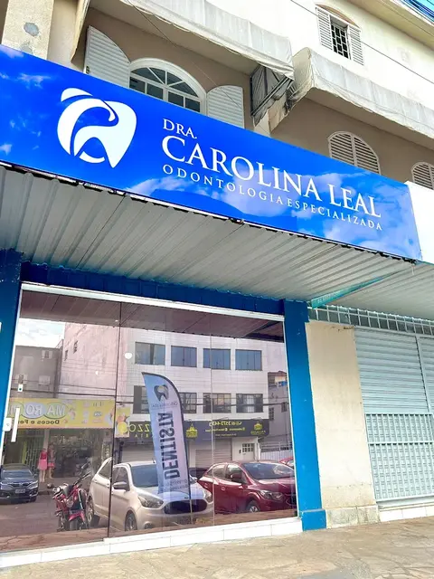

Sorrir sem receio começa por uma boa conversa.
No Guará II, a Dra. Carolina Leal reúne implantes, ortodontia, estética e cuidado infantil em uma só clínica. Você sai da avaliação sabendo o que tem, o que fazer e quanto vai custar.
QE 40, Conj. H, Lote 11, Loja 4, Guará II
Seg a sex 8h às 18h
Sábado 8h às 12h
Tratamentos
Escolha um tratamento para ver para quem ele é indicado e como funciona na clínica.
Implantes dentários
Repõem um ou mais dentes perdidos com uma raiz de titânio e uma coroa feita sob medida. Você volta a mastigar com firmeza e sem prótese solta.
- Indicado para
- Quem perdeu dentes ou usa prótese móvel e quer algo fixo.
- Como funciona
- Avaliação com exame de imagem, cirurgia com anestesia local e coroa definitiva após a cicatrização.
Ortodontia
Aparelhos fixos e alinhadores transparentes para corrigir dentes tortos, espaços e a forma como a boca fecha.
- Indicado para
- Crianças, adolescentes e adultos, em qualquer fase da vida.
- Como funciona
- Documentação ortodôntica, plano com tempo estimado e manutenções mensais.
Clareamento dental
Dentes mais claros com acompanhamento profissional, no consultório, em casa com moldeira ou combinando os dois.
- Indicado para
- Quem tem dentes saudáveis e se incomoda com o tom amarelado.
- Como funciona
- Avaliação da sensibilidade, escolha do protocolo e retornos para conferir a cor.
Lentes e facetas
Lâminas de porcelana ou resina que ajustam cor, formato e tamanho dos dentes da frente, com resultado natural.
- Indicado para
- Dentes manchados, desgastados, pequenos ou com espaços.
- Como funciona
- Planejamento do sorriso, prova antes da peça final e cimentação.
Tratamento de canal
Remove a infecção de dentro do dente e alivia a dor, preservando o dente natural em vez de extraí-lo.
- Indicado para
- Dor forte, sensibilidade que não passa ou dente escurecido.
- Como funciona
- Anestesia local, limpeza e selamento dos canais, em uma ou mais sessões.
Próteses
Coroas, pontes e dentaduras feitas sob medida para devolver a mastigação e a aparência do sorriso.
- Indicado para
- Dentes muito destruídos ou perdidos, quando o implante não é a melhor opção.
- Como funciona
- Moldagem, provas para ajustar conforto e cor, e entrega com orientações de uso.
Odontopediatria
Consultas pensadas para crianças, com tempo para adaptação e linguagem que elas entendem.
- Indicado para
- Bebês a partir do primeiro dente, crianças e pré-adolescentes.
- Como funciona
- Primeira visita de ambientação, prevenção com flúor e orientação aos pais.
Limpeza e prevenção
Limpeza profissional, tratamento da gengiva e revisões periódicas para evitar problemas maiores.
- Indicado para
- Todo mundo, a cada seis meses, e quem tem gengiva que sangra.
- Como funciona
- Exame clínico, remoção de tártaro, polimento e orientação de escovação.
Como é a primeira consulta
Do primeiro contato ao plano de tratamento, sem surpresas no caminho.
-
Você chama no WhatsApp
Conta o que está sentindo ou o que gostaria de mudar e escolhe um horário de segunda a sábado.
-
Avaliação sem pressa
A Dra. Carolina examina, pede exames de imagem se forem necessários e explica o que encontrou.
-
Plano por escrito
Você recebe as opções de tratamento, as etapas e os valores, e decide com calma.

A Dra. Carolina Leal
Cirurgiã-dentista à frente de uma clínica de odontologia especializada no Guará II, onde cada paciente é atendido do diagnóstico ao acompanhamento depois do tratamento.
A consulta começa ouvindo. Antes de qualquer procedimento, ela mostra o que encontrou, explica as alternativas com palavras simples e combina com você o que faz sentido para a sua saúde, o seu tempo e o seu orçamento.
Diagnóstico explicado
Você vê as imagens e entende cada etapa antes de decidir.
Especialidades no mesmo lugar
Do implante ao aparelho, sem precisar procurar várias clínicas.
Perto de casa
No comércio da QE 40, com atendimento também aos sábados.
O que dizem os pacientes
-
Eu tinha pavor de dentista. A Dra. Carolina explicou tudo antes de começar e fez o canal sem eu sentir dor. Hoje levo minha família inteira.
-
Fiz dois implantes e recebi o plano com todas as etapas e valores logo na avaliação. Nada de surpresa no meio do caminho.
-
Minha filha de 5 anos saiu da consulta pedindo para voltar. O cuidado com as crianças é outro nível.
-
Consegui encaixar o clareamento aos sábados, sem faltar no trabalho. Resultado natural, exatamente como combinamos.
A clínica
Fica no comércio da QE 40, no Guará II, com a fachada azul fácil de achar.



Dúvidas frequentes
Não achou sua pergunta? Mande no WhatsApp que a equipe responde.
A clínica atende convênio?
Os convênios aceitos podem mudar ao longo do ano. Chame no WhatsApp informando o seu plano e a equipe confirma se ele cobre o tratamento que você procura.
Quais as formas de pagamento?
Os valores e as opções de pagamento são apresentados junto com o plano de tratamento, depois da avaliação, para que você decida sabendo o custo total.
Estou com dor. Consigo atendimento rápido?
Sim. Avise no WhatsApp que é dor ou urgência, e a equipe procura o primeiro horário disponível no mesmo dia ou no seguinte.
Quanto tempo dura a primeira consulta?
Reserve cerca de uma hora. É tempo para conversar, examinar e explicar o plano sem correria.
A partir de que idade a criança deve ir ao dentista?
A recomendação é a primeira consulta quando nasce o primeiro dente, ou até o primeiro aniversário. Quanto antes, mais tranquila é a adaptação.
O que devo levar na avaliação?
Documento com foto, carteirinha do convênio se tiver, e exames ou radiografias recentes. Se usa algum medicamento, anote o nome.
Agende sua avaliação
Preencha ao lado e a mensagem já chega pronta no WhatsApp da clínica. Se preferir, ligue.
-
Telefone e WhatsApp(61) 99515-8616
Horário de funcionamento
| Segunda a sexta | 8h às 18h |
|---|---|
| Sábado | 8h às 12h |
| Domingo | Fechado |